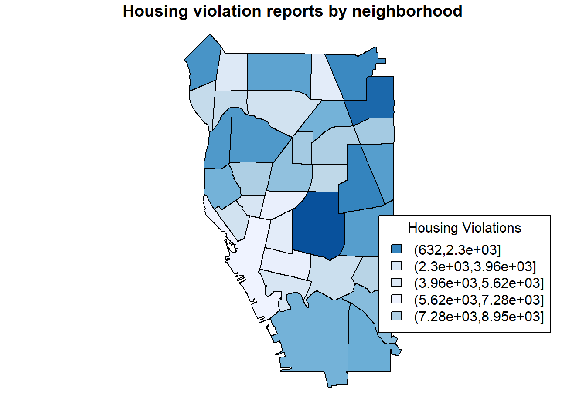

GEO 511 Final Project
Housing Violations by Neighborhood
Brendan Kunz
Introduction
[~ 200 words]
Clearly stated background and questions / hypotheses / problems being addressed. Sets up the analysis in an interesting and compelling way.
For my project, I’ll be looking at 311 requests in Buffalo that allege code violations by landlords, stretching from 2008 to the beginning of 2020. This issue caught my interest because in a previous internship during my undergrad, I would canvass in mostly low income neighborhoods of Binghamton where I was able to see the negligence of slum lords in these areas. Within Binghamton, these poor living conditions for renters was mostly confined to a handful of neighborhoods so I’m wondering if I will be able to see something similar in Buffalo by looking at the 311 requests. Also I’m interested in looking at a number of demographics that might correspond with high housing violations such as the tendency for racial minorities to be confined largely to low-income, underdeveloped neighborhoods and also poverty rates. Going into this, it’s important to note that issues concerning housing are highly complex and no single factor is going to be able to explain this and the data provided doesn’t account for what percent of housing units are rentals and what the density of the neighborhoods are to begin with.
Materials and methods
[~ 200 words]
Narrative: Clear narrative description of the data sources and methods. Includes data from at least two sources that were integrated / merged in R.
Code: The code associated with the project is well organized and easy to follow. Demonstrates mastery of R graphics and functions.
Data: The underlying data are publicly accessible via the web and downloaded/accessed within the Rmd script. If you want to use your own data, you must make it available on a website (e.g. Figshare) so that others are able to re-run your code.
You can do bullets like this:
- The first most important thing
- The second most important thing
- The third most important thing
You can do numbers like this:
- The first most important thing
- The second most important thing
- The third most important thing
See http://rmarkdown.rstudio.com/ for all the amazing things you can do.
Load any required packages in a code chunk (you may need to install some packages):
library(tibble)
library(rgdal)
library(sp)
library(sf)
library(GISTools)
library(RColorBrewer)
library(tbart)
library(viridis)
library(dplyr)
require(rgdal)
library(ggmap)
library(ggplot2)
library(raster)
library(tmap)
library(kableExtra)
knitr::opts_chunk$set(cache=TRUE) # cache the results for quick compilingDownload and clean all required data
#neighborhoods <- st_read(dsn = path.expand("violation_count2.shp"), layer = "violation_count2")
URL <- "https://raw.githubusercontent.com/geo511-2020/geo511-2020-project-btkunz/master/violation_count3.geojson"
neighborhoods <- st_read(dsn = URL)## Reading layer `violation_count3' from data source `https://raw.githubusercontent.com/geo511-2020/geo511-2020-project-btkunz/master/violation_count3.geojson' using driver `GeoJSON'
## Simple feature collection with 35 features and 14 fields
## geometry type: MULTIPOLYGON
## dimension: XY
## bbox: xmin: -78.91246 ymin: 42.82603 xmax: -78.79504 ymax: 42.96641
## geographic CRS: WGS 84neighborhood <- st_as_sf(neighborhoods,4326)
str(neighborhoods)## Classes 'sf' and 'data.frame': 35 obs. of 15 variables:
## $ calcacres : num 947 213 543 1473 543 ...
## $ nbhdname : chr "Genesee-Moselle" "Allentown" "West Hertel" "Central" ...
## $ nbhdnum : num 23 3 11 1 5 17 19 25 8 34 ...
## $ objectid : num 23 3 11 1 5 13 19 32 8 33 ...
## $ objectid_1: num 31 24 1 26 22 35 18 34 9 14 ...
## $ placename : chr "Buffalo" "Buffalo" "Buffalo" "Buffalo" ...
## $ sde_vector: num 41248623 9298607 23664613 64185169 23666494 ...
## $ shape_leng: num 28982 12763 20858 78081 20649 ...
## $ shape_star: num 41248622 9298607 23664614 64185170 23666494 ...
## $ shape_stle: num 28982 12763 20858 78081 20649 ...
## $ sqmiles : num 1.48 0.334 0.849 2.302 0.849 ...
## $ NUMPOINTS : num 6796 1596 1382 640 3130 ...
## $ x : num -78.8 -78.9 -78.9 -78.9 -78.9 ...
## $ y : num 42.9 42.9 43 42.9 42.9 ...
## $ geometry :sfc_MULTIPOLYGON of length 35; first list element: List of 1
## ..$ :List of 1
## .. ..$ : num [1:52, 1:2] -78.8 -78.8 -78.8 -78.8 -78.8 ...
## ..- attr(*, "class")= chr [1:3] "XY" "MULTIPOLYGON" "sfg"
## - attr(*, "sf_column")= chr "geometry"
## - attr(*, "agr")= Factor w/ 3 levels "constant","aggregate",..: NA NA NA NA NA NA NA NA NA NA ...
## ..- attr(*, "names")= chr [1:14] "calcacres" "nbhdname" "nbhdnum" "objectid" ...color_viol <- brewer.pal(5, "Blues")
color_viol <- colorRampPalette(color_viol)(35)
census_tracts <- cut(neighborhood$NUMPOINTS, 35)
color_viol <- color_viol[as.numeric(census_tracts)]
#neighborhoods <- st_read(dsn = path.expand("violation_count.shp"), layer = "violation_count")library(tmap)
library(ggmap)
#str(neighborhood)
# ggplot(col = neighborhood$NUMPOINTS)+
# geom_sf(data = neighborhoods, aes(x=x,y=y, fill = color_viol))
#Expand bbox to accommodate for a title and legend
nbhd_bbox <- st_bbox(neighborhood)
print(nbhd_bbox)## xmin ymin xmax ymax
## -78.91246 42.82603 -78.79504 42.96641xrange <- nbhd_bbox$xmax - nbhd_bbox$xmin
yrange <- nbhd_bbox$ymax - nbhd_bbox$ymin
nbhd_bbox[1] <- nbhd_bbox[1] - (0.3 * xrange) #learned how to efficiently adjust the bbox from stack overflow
nbhd_bbox[3] <- nbhd_bbox[3] + (0.3 * xrange)
nbhd_bbox[2] <- nbhd_bbox[2] - (0.2 * yrange)
nbhd_bbox[4] <- nbhd_bbox[4] + (0.2 * yrange)
tm_shape(neighborhood, bbox = nbhd_bbox)+
#tm_polygons(col = "NUMPOINTS", palette = blues9)+
tm_fill("NUMPOINTS", title = "Housing\nViolations", palette = blues9, n = 9)+
tm_borders()+ #helped by Collin
tm_layout(title = "Housing Violations By Neighborhood", title.position = c("center","top"),
title.bg.color = "gray", title.bg.alpha = 0.5)
#ggplot(data = neighborhood)+
#geom_sf()
# plot(neighborhoods["NUMPOINTS"], col = color_viol, main = "Housing violation reports by neighborhood")
# legend("bottomright", title = "Housing Violations", legend = levels(cut(neighborhoods$NUMPOINTS, 5)), fill = color_viol) #ISSUE TO NOTE: it seems that the legend is uncooperative in matching the correct colors to the different values so whomever is peer reviewing this, do you have any suggestions?
# plot1 <- ggplot(neighborhood["NUMPOINTS"],aes(x=x,y=y, col = color_viol))+
# geom_polygon(aes(fill = color_viol))
# plot1
#Check out geom_sf to plot polygons rather than using x and yURL2 <- "https://raw.githubusercontent.com/geo511-2020/geo511-2020-project-btkunz/master/Neighborhood_Statistics.geojson"
demographics <- st_read(dsn = URL2)## Reading layer `Neighborhood_Statistics' from data source `https://raw.githubusercontent.com/geo511-2020/geo511-2020-project-btkunz/master/Neighborhood_Statistics.geojson' using driver `GeoJSON'
## Simple feature collection with 35 features and 135 fields
## geometry type: MULTIPOLYGON
## dimension: XY
## bbox: xmin: -78.91246 ymin: 42.82603 xmax: -78.79504 ymax: 42.96641
## geographic CRS: WGS 84st_as_sf(demographics,4326)## Simple feature collection with 35 features and 135 fields
## geometry type: MULTIPOLYGON
## dimension: XY
## bbox: xmin: -78.91246 ymin: 42.82603 xmax: -78.79504 ymax: 42.96641
## geographic CRS: WGS 84
## First 10 features:
## calcacres nbhdname nbhdnum objectid objectid_1 placename
## 1 751.4336 Kensington-Bailey 16 16 6 Buffalo
## 2 1473.4946 Central 1 1 26 Buffalo
## 3 1118.8730 Elmwood Bidwell 7 7 16 Buffalo
## 4 610.6493 Riverside 10 10 11 Buffalo
## 5 435.2781 Fruit Belt 28 28 25 Buffalo
## 6 428.4950 Pratt-Willert 29 29 27 Buffalo
## 7 854.8347 University Heights 15 15 4 Buffalo
## 8 654.5376 Delavan Grider 19 19 18 Buffalo
## 9 563.2200 Kaisertown 32 32 12 Buffalo
## 10 359.9365 Lower West Side 2 2 23 Buffalo
## sde_vector shape_leng shape_star shape_stle sqmiles Neighborho
## 1 32732317 26711.12 32732317 26711.12 1.1741150 Kensington-Bailey
## 2 64185169 78080.95 64185170 78080.95 2.3023354 Central
## 3 48737914 29277.48 48737915 29277.48 1.7482391 Elmwood Bidwell
## 4 26599776 21674.41 26599775 21674.41 0.9541395 Riverside
## 5 18960637 18753.38 18960637 18753.38 0.6801220 Fruit Belt
## 6 18665169 18142.06 18665169 18142.06 0.6695235 Pratt-Willert
## 7 37236449 29989.26 37236448 29989.26 1.3356792 University Heights
## 8 28511544 22807.65 28511545 22807.65 1.0227150 Delavan Grider
## 9 24533763 19772.31 24533763 19772.31 0.8800312 Kaisertown
## 10 15678773 17775.85 15678773 17775.85 0.5624009 Lower West Side
## Community ID Neighbor_1 Labor.Forc Employment Private.Em Government
## 1 East 16 KB 56.41 89.47 82.11 16.11
## 2 Central 1 CN 55.17 93.43 80.41 16.76
## 3 West 6 EBW 66.01 94.02 80.12 15.57
## 4 North 11 RS 56.06 95.04 80.33 16.14
## 5 East 25 FB 40.25 89.76 75.15 14.04
## 6 East 26 PW 54.55 91.15 74.74 23.28
## 7 North 15 UH 56.76 92.20 77.32 19.68
## 8 East 21 DG 51.29 86.54 75.77 18.82
## 9 South 30 KT 62.39 92.77 77.64 18.87
## 10 West 2 LWS 53.92 91.68 79.93 18.35
## Self.Emplo Median.Inc Poverty.Ra Total.Pers Male.Perso Percent.Ma Female.Per
## 1 1.78 37240 30.88 14098 6250 44.33 7848
## 2 2.83 54390 19.52 3458 1928 55.75 1530
## 3 4.31 56150 18.24 15804 7405 46.86 8399
## 4 3.52 21570 45.32 10703 4891 45.70 5812
## 5 10.82 25350 28.03 2296 1028 44.77 1268
## 6 1.98 26330 30.65 4772 1777 37.24 2995
## 7 3.00 42130 35.21 10377 5565 53.63 4812
## 8 5.41 28370 29.43 5501 2300 41.81 3201
## 9 3.49 41280 15.14 5180 2493 48.13 2687
## 10 1.71 18340 46.55 6340 2712 42.78 3628
## Percent.Fe Age...24 Percent.Ag Age.25.to Percent._1 Age.45.to Percent._2
## 1 55.67 5682 40.30 3498 24.81 3395 24.08
## 2 44.25 811 23.45 1328 38.40 858 24.81
## 3 53.14 6500 41.13 4699 29.73 2948 18.65
## 4 54.30 4426 41.35 2911 27.20 2528 23.62
## 5 55.23 666 29.01 347 15.11 694 30.23
## 6 62.76 1406 29.46 1160 24.31 1312 27.49
## 7 46.37 5174 49.86 2348 22.63 2102 20.26
## 8 58.19 1919 34.88 1020 18.54 1544 28.07
## 9 51.87 1345 25.97 1341 25.89 1710 33.01
## 10 57.22 2428 38.30 1778 28.04 1487 23.45
## Age.65.. Percent._3 White Percent.Wh Black Percent.Bl Latinx Percent.La
## 1 1523 10.80 887 6.29 12373 87.76 206 1.46
## 2 461 13.33 1656 47.89 986 28.51 707 20.45
## 3 1657 10.48 11039 69.85 2548 16.12 1066 6.75
## 4 838 7.83 5261 49.15 1428 13.34 2407 22.49
## 5 589 25.65 265 11.54 1903 82.88 93 4.05
## 6 894 18.73 285 5.97 4042 84.70 219 4.59
## 7 753 7.26 3723 35.88 3976 38.32 725 6.99
## 8 1018 18.51 102 1.85 5104 92.78 56 1.02
## 9 784 15.14 4492 86.72 237 4.58 341 6.58
## 10 647 10.21 1386 21.86 1454 22.93 3220 50.79
## Asian Percent.As Other Percent.Ot Total.Occu Occupied.U Percent.Oc
## 1 253 1.79 379 2.69 6492 5674 87.40
## 2 58 1.68 51 1.47 1957 1631 83.34
## 3 699 4.42 452 2.86 7143 6170 86.38
## 4 1112 10.39 495 4.62 4831 4130 85.49
## 5 0 0.00 35 1.52 1333 854 64.07
## 6 44 0.92 182 3.81 3086 2631 85.26
## 7 1657 15.97 296 2.85 4233 3568 84.29
## 8 0 0.00 239 4.34 3045 2384 78.29
## 9 0 0.00 110 2.12 2833 2437 86.02
## 10 27 0.43 253 3.99 3276 2899 88.49
## Vacant.Uni Percent.Va Other.Vaca Percent._4 Total.Unit X1.Unit.Str Percent.1
## 1 818 12.60 599 9.23 6492 3594 55.36
## 2 326 16.66 96 4.91 1953 203 10.39
## 3 973 13.62 689 9.65 7143 2000 28.00
## 4 701 14.51 504 10.43 4831 2050 42.43
## 5 479 35.93 406 30.46 1333 625 46.89
## 6 455 14.74 172 5.57 3086 948 30.72
## 7 665 15.71 396 9.36 4233 2048 48.38
## 8 661 21.71 441 14.48 3026 1406 46.46
## 9 396 13.98 353 12.46 2833 1608 56.76
## 10 377 11.51 307 9.37 3254 628 19.30
## X2.Unit.Str Percent.2 X3.to.19.Un Percent.3 X20.or.More Percent.20
## 1 2379 36.65 465 7.16 54 0.83
## 2 61 3.12 318 16.28 1371 70.20
## 3 2703 37.84 1712 23.97 728 10.19
## 4 2100 43.47 564 11.67 117 2.42
## 5 376 28.21 204 15.30 128 9.60
## 6 307 9.95 949 30.75 882 28.58
## 7 1625 38.39 414 9.78 146 3.45
## 8 1553 51.32 56 1.85 11 0.36
## 9 954 33.67 243 8.58 28 0.99
## 10 1034 31.78 833 25.60 759 23.33
## Built.2000 Percent.Bu Built.1970 Percent._5 Built.1940 Percent._6 Built.Befo
## 1 13 0.20 192 2.96 1460 22.49 4827
## 2 289 14.77 460 23.51 625 31.94 583
## 3 76 1.06 322 4.51 787 11.02 5958
## 4 28 0.58 138 2.86 1669 34.55 2996
## 5 80 6.00 131 9.83 298 22.36 824
## 6 495 16.04 1160 37.59 853 27.64 578
## 7 56 1.32 150 3.54 949 22.42 3078
## 8 71 2.33 81 2.66 881 28.93 2012
## 9 24 0.85 69 2.44 1304 46.03 1436
## 10 339 10.35 754 23.02 636 19.41 1547
## Percent._7 Owner.Tenu Percent.Ow Renter.Ten Percent.Re X0.Availabl Percent.0
## 1 74.35 2568 45.26 3106 54.74 1583 27.90
## 2 29.79 356 21.83 1275 78.17 270 16.55
## 3 83.41 2601 42.16 3569 57.84 878 14.23
## 4 62.02 1540 37.29 2590 62.71 1457 35.28
## 5 61.82 385 45.08 469 54.92 335 39.23
## 6 18.73 636 24.17 1995 75.83 1229 46.71
## 7 72.71 1517 42.52 2051 57.48 1035 29.01
## 8 66.08 1137 47.69 1247 52.31 668 28.02
## 9 50.69 1683 69.06 754 30.94 541 22.20
## 10 47.22 561 19.35 2338 80.65 1371 47.29
## X1.Availabl Percent._8 X2.orMore.A Percent._9 Median.Val Total.Cost
## 1 2705 47.67 1386 24.43 55018.38 2560
## 2 879 53.89 482 29.55 372700.00 356
## 3 2869 46.50 2423 39.27 208378.43 2572
## 4 1746 42.28 927 22.45 55546.10 1488
## 5 353 41.33 166 19.44 82300.00 385
## 6 1116 42.42 286 10.87 81355.66 636
## 7 1329 37.25 1204 33.74 78084.01 1517
## 8 1103 46.27 613 25.71 38352.07 1117
## 9 1062 43.58 834 34.22 66924.18 1607
## 10 1017 35.08 511 17.63 128305.35 554
## X30...Cost Share.Cost Median.V_1 Total.Rent X30...Rent. Share.Rent
## 1 595 23.24 796.6855 2920 1692 57.95
## 2 96 26.97 742.3133 1264 369 29.19
## 3 523 20.33 826.3239 3429 1423 41.50
## 4 355 23.86 674.0582 2228 1339 60.10
## 5 94 24.42 684.0000 460 249 54.13
## 6 158 24.84 468.3528 1958 1024 52.30
## 7 281 18.52 813.8226 1944 1243 63.94
## 8 256 22.92 719.7571 1115 762 68.34
## 9 245 15.25 692.1818 703 383 54.48
## 10 127 22.92 592.3891 2247 1416 63.02
## Family.Hou Percent.Fa Family.W.C Percent.10 Married.Fa Percent.11 Single.Per
## 1 3292 58.02 1545 27.23 320 5.64 2209
## 2 663 40.65 259 15.88 72 4.41 761
## 3 2707 43.87 1150 18.64 668 10.83 2386
## 4 2378 57.58 1398 33.85 595 14.41 1453
## 5 523 61.24 212 24.82 0 0.00 315
## 6 1135 43.14 552 20.98 72 2.74 1422
## 7 1642 46.02 784 21.97 300 8.41 980
## 8 1509 63.30 610 25.59 63 2.64 798
## 9 1170 48.01 438 17.97 241 9.89 1053
## 10 1463 50.47 1021 35.22 251 8.66 1225
## Percent.Si Foreign.Bo Percent.Fo X..High.Sch Percent.. High.Schoo Percent.Hi
## 1 38.93 214.51568 3.78 893.3044 15.74 3385.1181 59.66
## 2 46.66 174.51417 10.70 237.8413 14.58 581.0476 35.63
## 3 38.67 529.39256 8.58 421.7670 6.84 1612.7945 26.14
## 4 35.18 601.19032 14.56 944.1692 22.86 2358.1201 57.10
## 5 36.89 10.78659 1.26 203.8074 23.87 459.4834 53.80
## 6 54.05 66.16094 2.51 489.3066 18.60 1324.0980 50.33
## 7 27.47 566.98776 15.89 316.8203 8.88 1782.2856 49.95
## 8 33.47 41.17070 1.73 398.6644 16.72 1329.7688 55.78
## 9 43.21 119.02722 4.88 339.9726 13.95 1285.5413 52.75
## 10 42.26 192.04732 6.62 781.0700 26.94 1348.7168 46.52
## Associates Percent.12 Bachelors Percent.Ba Graduate.E Percent.Gr Total.Hous
## 1 637.7856 11.24 340.46697 6.00 417.32486 7.36 5674
## 2 147.2645 9.03 330.26672 20.25 334.57990 20.51 1631
## 3 567.6612 9.20 1702.98366 27.60 1864.79364 30.22 6177
## 4 417.8031 10.12 298.71276 7.23 111.19484 2.69 4130
## 5 55.5362 6.50 84.35215 9.88 50.82086 5.95 854
## 6 258.7228 9.83 298.58645 11.35 260.28610 9.89 2631
## 7 434.0850 12.17 521.17624 14.61 513.63290 14.40 3568
## 8 301.4941 12.65 235.60469 9.88 118.46789 4.97 2384
## 9 373.6522 15.33 319.00235 13.09 118.83155 4.88 2437
## 10 277.8949 9.59 286.78758 9.89 204.53067 7.06 2899
## Total.Fami Percent.13 Total.Marr Percent.14 Total.Fema Percent.15 Total.Male
## 1 1545 27.23 320 20.71 1063 68.80 162
## 2 259 15.88 72 27.80 164 63.32 23
## 3 537 8.69 401 74.67 98 18.25 38
## 4 1398 33.85 595 42.56 640 45.78 163
## 5 212 24.82 0 0.00 172 81.13 40
## 6 552 20.98 72 13.04 453 82.07 27
## 7 784 21.97 300 38.27 484 61.73 0
## 8 610 25.59 63 10.33 536 87.87 11
## 9 438 17.97 241 55.02 168 38.36 29
## 10 1021 35.22 251 24.58 751 73.56 19
## Percent.16 Total.Fa_1 Percent.17 Total.Ma_1 Percent.18 Total.Fe_1 Percent.19
## 1 10.49 1747 30.79 690 39.50 842 48.20
## 2 8.88 404 24.77 275 68.07 107 26.49
## 3 7.08 931 15.07 636 68.31 136 14.61
## 4 11.66 980 23.73 589 60.10 337 34.39
## 5 18.87 311 36.42 161 51.77 141 45.34
## 6 4.89 583 22.16 247 42.37 271 46.48
## 7 0.00 858 24.05 429 50.00 290 33.80
## 8 1.80 899 37.71 420 46.72 386 42.94
## 9 6.62 732 30.04 541 73.91 142 19.40
## 10 1.86 442 15.25 148 33.48 218 49.32
## Total.Ma_2 Percent.21 Total.Non. Percent.No Total.Livi Percent.Li Total.Not
## 1 215 12.31 2382 41.98 2209 92.74 173
## 2 22 5.45 968 59.35 761 78.62 207
## 3 159 17.08 4709 76.23 3738 79.38 971
## 4 54 5.51 1752 42.42 1453 82.93 299
## 5 9 2.89 331 38.76 315 95.17 16
## 6 65 11.15 1496 56.86 1422 95.05 74
## 7 139 16.20 1926 53.98 980 50.88 946
## 8 93 10.34 875 36.70 798 91.20 77
## 9 49 6.69 1267 51.99 1053 83.11 214
## 10 76 17.19 1436 49.53 1225 85.31 211
## Percent.22 Total.Li_1 Percent.23 Latitude Longitude
## 1 7.26 565 23.72 42.93978 -78.80988
## 2 21.38 184 19.01 42.87597 -78.87725
## 3 20.62 1103 23.42 42.92451 -78.87453
## 4 17.07 289 16.50 42.95495 -78.90192
## 5 4.83 164 49.55 42.89916 -78.86061
## 6 4.95 556 37.17 42.88711 -78.86013
## 7 49.12 306 15.89 42.95099 -78.82064
## 8 8.80 226 25.83 42.92194 -78.83156
## 9 16.89 378 29.83 42.87116 -78.80938
## 10 14.69 332 23.12 42.89269 -78.88538
## New.Georef geometry
## 1 (42.93977645, -78.80988103) MULTIPOLYGON (((-78.81369 4...
## 2 (42.87596621, -78.87725) MULTIPOLYGON (((-78.90209 4...
## 3 (42.9245109, -78.8745306) MULTIPOLYGON (((-78.87379 4...
## 4 (42.95494996, -78.90191565) MULTIPOLYGON (((-78.89537 4...
## 5 (42.89916002, -78.86060503) MULTIPOLYGON (((-78.87187 4...
## 6 (42.88710591, -78.86013401) MULTIPOLYGON (((-78.85391 4...
## 7 (42.95099497, -78.82064483) MULTIPOLYGON (((-78.80755 4...
## 8 (42.92194006, -78.83156452) MULTIPOLYGON (((-78.84342 4...
## 9 (42.87116397, -78.80937785) MULTIPOLYGON (((-78.79952 4...
## 10 (42.89269228, -78.88538022) MULTIPOLYGON (((-78.89033 4...#Edits to the bbox to accommodate for a title and legend
buff_bbox <- st_bbox(demographics)
print(buff_bbox)## xmin ymin xmax ymax
## -78.91246 42.82603 -78.79504 42.96641xrange <- buff_bbox$xmax - buff_bbox$xmin
yrange <- buff_bbox$ymax - buff_bbox$ymin
buff_bbox[1] <- buff_bbox[1] - (0.25 * xrange) #learned how to efficiently adjust the bbox from stack overflow
buff_bbox[3] <- buff_bbox[3] + (0.25 * xrange)
buff_bbox[2] <- buff_bbox[2] - (0.2 * yrange)
buff_bbox[4] <- buff_bbox[4] + (0.2 * yrange)
tm_shape(demographics, bbox = buff_bbox)+
tm_fill("Poverty.Ra", title = "Poverty Rate", palette = blues9, n = 9)+
tm_borders()+
tm_layout(title = "Poverty Rate By Neighborhood ", title.position = c("center","top"), title.bg.color = "gray",
title.bg.alpha = 0.5)
#color_scheme <- brewer.pal(5, "Blues")
#color_scheme <- colorRampPalette(color_scheme)(35)
#census_tract <- cut(demographics$Percent.Wh, 35)
#color_scheme <- color_scheme[as.numeric(census_tract)]
#str(demographics$Percent.Wh)
#print(demographics$Percent.Wh)
#plot(demographics["Percent.Wh"], col = color_scheme)Add any additional processing steps here.
Results
[~200 words]
Tables and figures (maps and other graphics) are carefully planned to convey the results of your analysis. Intense exploration and evidence of many trials and failures. The author looked at the data in many different ways before coming to the final presentation of the data.
Show tables, plots, etc. and describe them.
plot(demographics["Percent.Wh"], col = color_scheme, main = "Percent White by Neighborhood")
legend("bottomright", title = "Percent White", legend = levels(cut(demographics$Percent.Wh, 5)), fill = color_scheme)This map focuses on the issue of lingering segregation in Buffalo that many of us are already aware of, where North and South Buffalo are predominately White while the East side is predominately Black. As stated above, my initial thoughts were that violation reports would be largely concentrated in the East and West sides of Buffalo due to what I perceived to be a large number of rentals relative to the other areas of the city.
plot(neighborhoods["NUMPOINTS"], col = color_viol, main = "Housing violation reports by neighborhood")
legend("bottomright", title = "Housing Violations", legend = levels(cut(neighborhoods$NUMPOINTS, 5)), fill = color_viol) #ISSUE TO NOTE: it seems that the legend is uncooperative in matching the correct colors to the different values so whomever is peer reviewing this, do you have any suggestions? 
This map focuses on the core of what I’m looking at: housing violation allegations filed through the 311 service. As it would appear, my initial thoughts are somewhat accurate where the largest number of housing violations are concentrated in the center of the east side. That being said, I didn’t consider how there could be potential slumlord issues off of south campus as I don’t have a lot of knowledge about University Heights relative to the rest of the city. Also it seems that housing violations seem to be fairly high in the northern center of North Buffalo which came as a bit of a surprise as I perceived most of North Buffalo to be wealthy single family homes with higher end apartments dotted on the major roads. When moving into the final draft it might be worth looking at how poverty is distributed throughout the city as that could give me a greater understanding of the situation.
Conclusions
[~200 words]
Clear summary adequately describing the results and putting them in context. Discussion of further questions and ways to continue investigation.
References
All sources are cited in a consistent manner
https://www.jla-data.net/eng/adjusting-bounding-box-of-a-tmap-map/